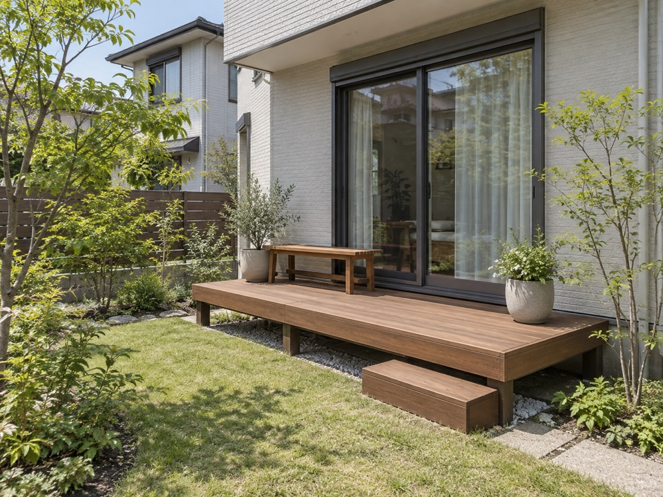
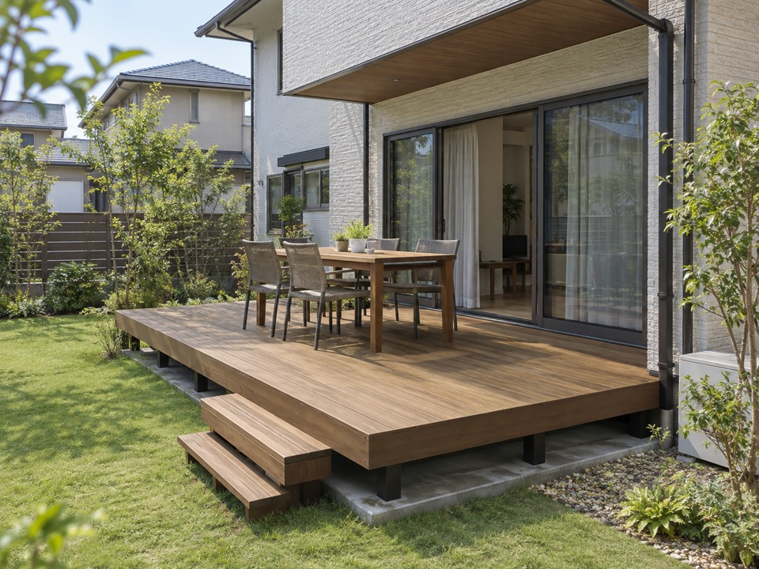

庭を眺めて、ひと休み。
窓からすぐ出られる場所に。
ウッドデッキ専門店
庭に、暮らしをプラス。

窓を開けたら、そこも家族の居場所。
庭の広さ・使い方・ご予算から考えます。
サイズも商品も、決まっていなくて大丈夫。
友だち追加後、希望の使い方をひとこと。
写真や図面は、まだなくても大丈夫です。

窓からすぐ出られる場所に。

家族でテーブルを囲む時間に。
写真は使い方を表すプランイメージです。
まず知りたい、サイズと費用
わが家に近い使い方から、サイズをイメージ。
腰掛ける・庭へ出る
縁側のように使う配置例。
2人でお茶を楽しむ
家具の大きさと通路幅を確認。
家族でテーブルを囲む
椅子の出し入れで必要寸法は変わります。
寸法は配置を考えるための例です。商品規格・家具・現地条件で必要な広さは変わります。
工事費は広さ・素材・基礎・ステップなどで変わります。「予算内で、どのくらいの広さにできる？」からご相談ください。費用が変わるポイントを見る
おおよその寸法でも、まだ分からなくてもOK
形から広がる、庭の使い方
広さも、窓も、したいことも。
庭に合わせて考える6つのプランです。
画像をタップすると、大きく見られます。
庭を残して、窓前だけに。
2つの窓から出入りする。
テーブルを囲む時間に。
家の角に沿って、庭へ。
デッキから庭へ降りやすく。
外からの視線が気になる庭に。
すべて生成したプランイメージで、実際の施工事例写真ではありません。設置できる形や仕様は現地確認が必要です。
見積もりで比べたいこと
同じ広さでも、次の条件で総額が変わります。
横幅と奥行き、加工の有無、商品や樹種。必要な広さから考えると予算を整理しやすくなります。
土やコンクリートなどの状態と、窓からの高さ。デッキを支える下地も確認します。
追加したい設備や既存物の撤去、材料の搬入経路。必要な工事を分けて確認します。
比較するときは、本体・基礎・施工・撤去・オプションのどこまで含む金額かを確認しましょう。
素材選びのヒント
「手入れにかける時間」と「好みの質感」が、選ぶときの手がかりです。
人工木：木目や色を表現した仕上げ。候補の実物サンプルで確認。
天然木：自然の木目と触感。同じ樹種でも個体差があります。
人工木：清掃は必要。定期塗装が不要な商品もあります。
天然木：清掃に加え、樹種・仕上げに応じた保護塗装など。
人工木：色調の変化、汚れ、傷、伸縮などが起こり得ます。
天然木：退色、割れ、反りなどの出方は樹種・環境によります。
人工木：商品・下地・形状・オプションを含めて比較。
天然木：樹種・下地・加工に加え、将来の手入れも考慮。
夏の熱さや耐久性も商品・樹種・設置環境によって変わります。素材名だけで決めず、採用候補の仕様を確認します。
つくる前に確認したいこと
ウッドデッキのご相談
サイズ・素材・ご予算を、一緒に整理。目隠しやステップの希望も、庭全体の使い方と合わせてお伝えください。
「庭でお茶を飲みたい」など、短い文章で大丈夫です。
市区町村と希望の使い方から。写真・図面は、あればで構いません。
必要な確認を行い、工事範囲と金額を具体的にします。
仕様や費用を確認し、ご納得いただいてから進めます。
友だち追加後、希望の使い方をひとこと送ってください
相談前の気がかりに
窓の前だけに設けるコンパクトな形も選択肢です。庭に残したい広さ、境界、室外機、点検口、排水を確認して設置できるか判断します。
「庭でお茶を飲みたい」「洗濯物を干したい」など、使いたい場面から相談できます。写真や図面も、最初からそろえる必要はありません。
広さ・素材・基礎・高さ・追加設備で変わるため、現時点では一律の価格を掲載していません。希望の使い方とご予算を伝え、含まれる工事を確認しながらお見積もりをご相談ください。
後付けを検討できる場合もあります。窓の高さや地面の状態、配管・排水・搬入経路を確認します。既存のデッキがある場合は、その状態もお知らせください。
手入れにかけられる時間と、好みの質感から比べてみましょう。人工木も清掃は必要です。天然木の手入れは樹種・仕上げで異なります。取扱可能な製品と仕様を確認して選びます。
直射日光でデッキ表面が熱くなる場合があります。素材名だけでは判断せず、商品の仕様、色、日当たり、日よけも確認しましょう。使用前には表面の熱さを確かめてください。
一律の年数はお約束できません。製品・樹種・設置環境・使い方・手入れで変わります。床板だけでなく下地も点検し、採用品の保証条件とお手入れ方法を確認することが大切です。
次は、わが家の庭で。
広さが分からなくても、商品が未定でも。
まずは「庭でしたいこと」をお聞かせください。
サイズ・素材・費用を相談できます